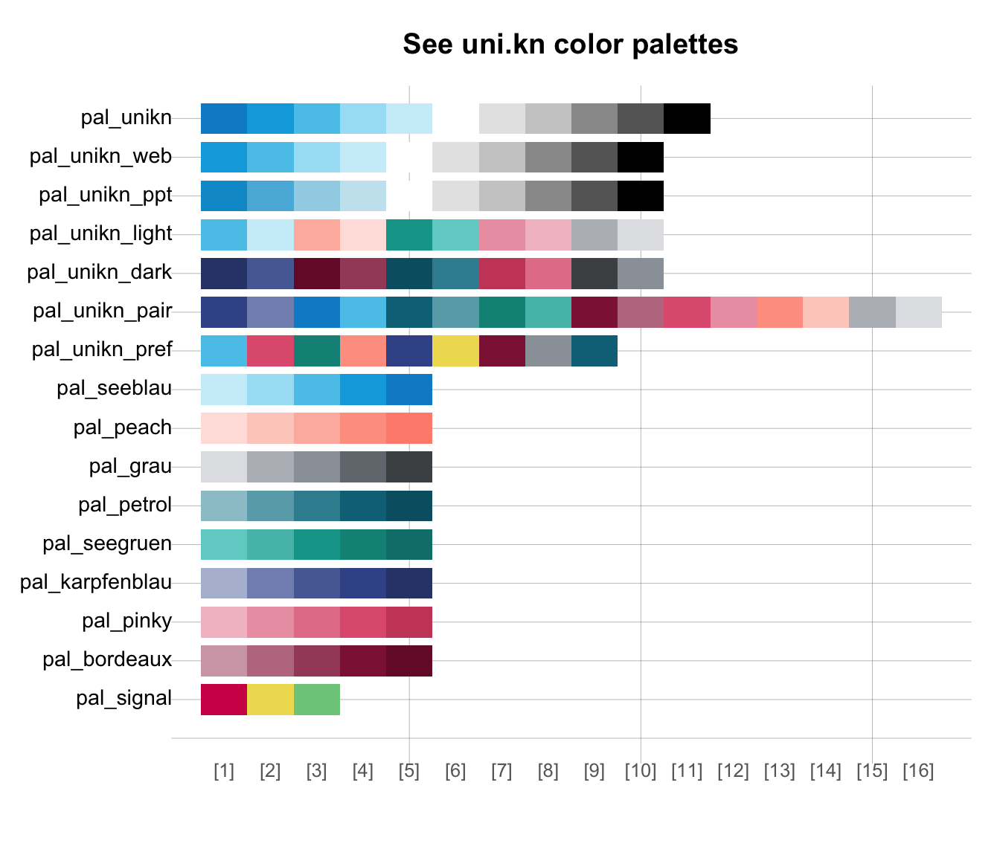
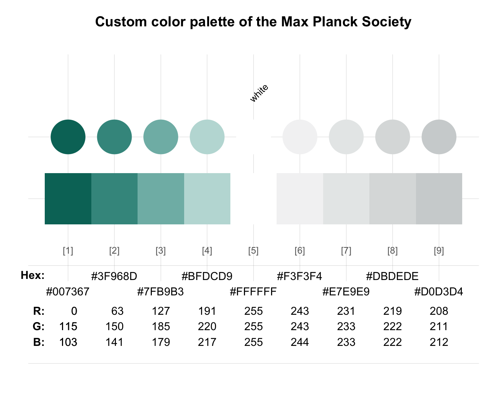

Plot color palettes (to see their colors).
seecol.Rdseecol provides an interface to plotting (or "seeing")
the colors of a palette or comparing multiple color palettes.
seecol(pal = "unikn_all", n = "all", alpha = NA, hex = NULL, rgb = NULL, col_bg = NULL, col_brd = NULL, lwd_brd = NULL, grid = TRUE, title = NA, ...)
Arguments
| pal | A color palette (as a vector of colors),
a character string recognized as keyword by seecol or
multiple palettes specified as list.
Default: Recognized keywords are:
|
|---|---|
| n | Number of colors to show or use.
If |
| alpha | A factor modifying the opacity alpha (as in |
| hex | Should HEX color values be shown?
Default: |
| rgb | Should RGB color values be shown?
Default: |
| col_bg | Color of plot background.
Default: |
| col_brd | Color of shape borders (if shown).
Default: |
| lwd_brd | Line width of shape borders (if shown).
Default: |
| grid | Show grid in the color plot?
Default: |
| title | Plot title?
Default: |
| ... | Other graphical parameters
(passed to |
Details
seecol has 2 main modes, based on the contents of its pal argument:
if
pal = "unikn_all"(or a list of multiple color palettes):Plot visual vectors of all current color palettes for comparing them.
if
palis set to a specific color palette (or a vector of multiple colors or color palettes):Plot the current color palette and optional details on its colors.
See also
Examples
# See all color palettes: seecol() # same as seecol(pal = "all")# See details of a color palette: seecol(pal_unikn) # see a specific color palette# Combining colors or color palettes: seecol(c(rev(pal_seeblau), pal_seegruen)) # combine color palettes# Using n to reduce or extend color palettes: seecol(n = 3) # viewing reduced ranges of all palettesseecol(n = 12) # viewing extended ranges of all palettesseecol(pal_unikn, n = 5, title = "Reduced version of pal_unikn (n = 5)") # reducing pal_uniknseecol(pal_seeblau, n = 8, title = "Extended version of pal_seeblau (n = 8)") # extending pal_seeblau# Combining and extending color palettes: seecol(c(rev(pal_seeblau), "white", pal_bordeaux), n = 17, title = "Diverging custom color palette with 17 colors")# Defining custom color palettes: pal_mpg <- c("#007367", "white", "#D0D3D4") names(pal_mpg) <- c("mpg green", "mpg white", "mpg grey") # Viewing extended color palette: seecol(pal_mpg, n = 9, title = "Custom color palette for Max Planck Society")## Viewing color palettes from other packages: # library(RColorBrewer) # seecol(brewer.pal(name = "RdBu", n = 11)) # viewing "RdBu" palette from RColorBrewer ## Extending color palettes: # seecol(brewer.pal(name = "RdBu", n = 11), n = 15) # extending palette to 15 colors